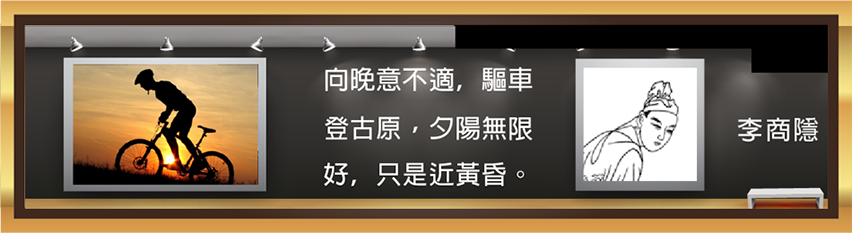
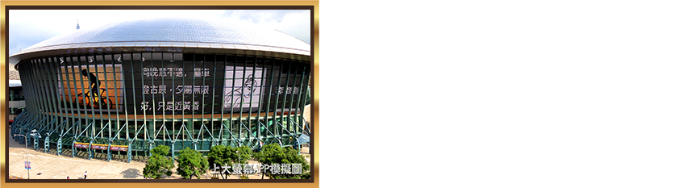
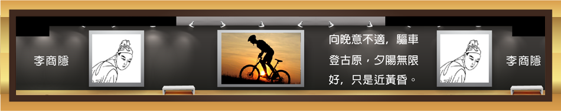
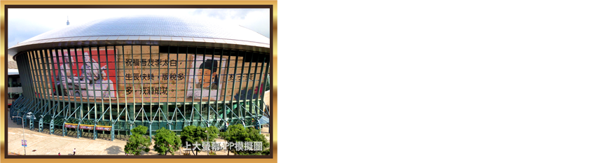
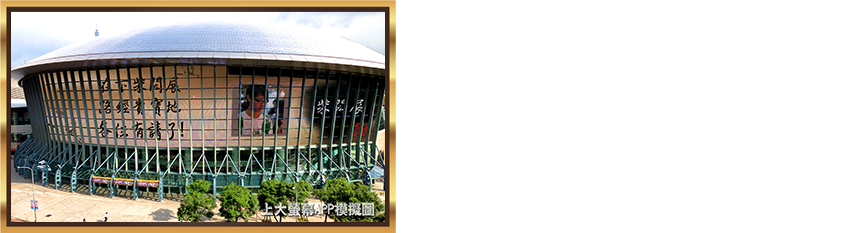
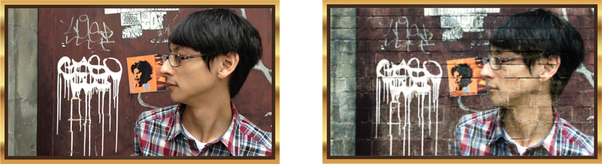

可發表在大螢幕的創作，有以下主題供選擇
創意，改變世界的武器
台北天幕LED，化身為全民發表創意最壯觀的舞台，的創意，就是台灣的軟實力。
舉凡攝影、設計稿、詩、畫，你嘔心瀝血的創作，將有機會登上大螢幕。你可從三種版型中，選擇最適合的一種來呈現，你的facebook名稱與大頭貼照，會一起被刊登。
創意，是改變世界的武器；期待你的作品，名震天下。
以下是由李商隱同學所做的創作示範，他發表了他寫的詩與攝影作品。(ps：恭喜他經過多年的重考終於考到進士證照)
這是李同學所選擇的版面：一張圖 + 24個字
這是APP合成的模擬預覽圖
這是天幕實際刊登的版面比例尺寸：100公尺 x 16公尺

獻上祝福
把祝福刊登在大螢幕，給親朋好友來個驚喜！
若這是一張祝福卡片，那可能是你親朋好友收過最大的一張了。你可從三種版型中，選擇最適合的一種來呈現祝福文字與圖片，你的facebook名稱與大頭貼照，會一起被刊登。平凡的祝賀文人們已厭倦，給個有創意的來瞧瞧！
以下是由杜子美先生所做的創作示範，他想為好友李太白先生祝壽，苦思已久的他，決定送出一張史上最大的生日賀卡。
這是杜先生所選擇的版面：一張圖 + 24個字
這是APP合成的模擬預覽圖

這是天幕實際刊登的版面比例尺寸：100公尺 x 16公尺
路經貴寶地
打卡上螢幕！路經台北小巨蛋專用。
這是給台北天幕LED一百丈以內之俠女好漢的特別功能，像是打卡，你必須身處小巨蛋附近，方能使用。這同時考驗你的文字創意。
以下是柴閎展先生路經台北小巨蛋時，向台北天幕LED打卡的示範。
這是APP合成的模擬預覽圖
這是天幕實際刊登的版面比例尺寸：100公尺 x 16公尺
素人拉洋片
上傳創意自拍照，成為廣告影片的主角！
剪接室會把你的創意自拍照剪入洋片中，讓你成為主角。這不是每位施主都能有的福氣，要好好考考你自拍的創意。
以下是由素人柴先生上傳自拍照，不看鏡頭的玉樹臨風，獲得上大螢幕導演的認同，經由拉洋片製作出此創意短片。
以上主題之檔次時段是由諾亞媒體所提供。諾亞媒體，數位看板應用整合服務商。